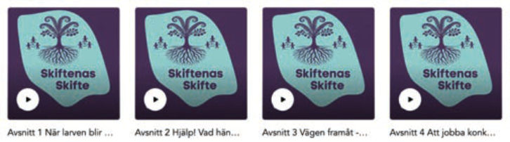
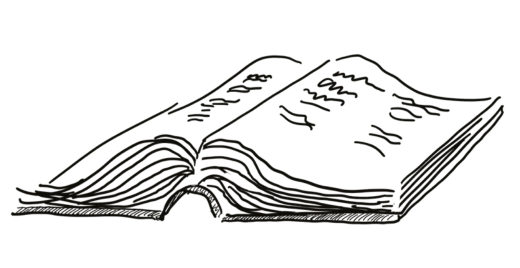
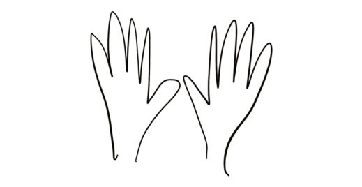
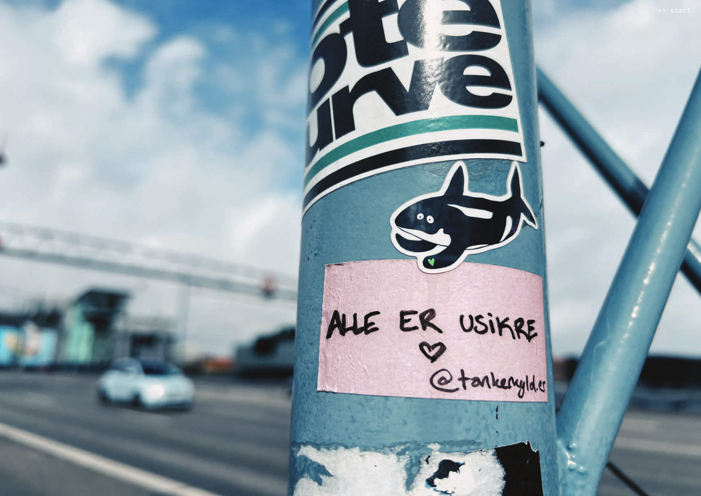
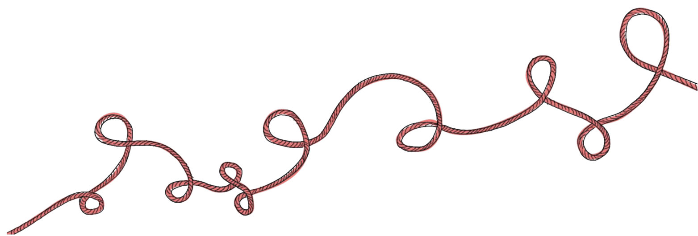

1. Introduktion, definitioner
2. Vad är det som händer?
3. En ny logik för en värld i förändring
4. Människan i transformation
5. Transformation som hantverk
6. Driva transformationsprocesser
7. Hantera övergången: organisation & ledarskap
8. Facilitera systemisk transformation
Detta är en guide som hjälper dig att navigera systemisk transformation
Hej! Vem är du? Vi riktar oss till dig som vill förstå och navigera den djupare omställning som sker runt omkring oss, och till dig som vill verka för förändring. Vi tänker att du kanske är en pionjär eller förändrings-agent som driver transformation. En ledare eller beslutsfattare som vill möjliggöra transformation. Eller kanske en forskare eller utvecklare som vill förstå din gärning i en transformationskontext och få nya ord på det du gör.
Systemisk transformation är en förklaringsmodell som underlättar utforskande och samlärande, med ett språk som vi kan samlas kring. Den erbjuder perspektiv som innebär nya sätt att tolka omvärlden och interagera - på ett filosofiskt, känslomässigt och handfast plan. Det kan hjälpa dig se det du gör i nytt ljus, och hitta nya kreativa hjärnor att samarbeta med.
Vilka är vi? På avdelningen Prototypande Samhälle på RISE är vi flera forskare, designers och processledare som har lång erfarenhet av forsknings- och förändringsprojekt om samhällstransformation på olika nivåer och i olika sektorer.
Med den här handboken vill vi att du tydligare ska känna att du spelar roll inom den systemiska transformationen. Guiden bygger på våra egna erfarenheter, samlad kunskap från stora tänkare, och på insikter som växt fram kring mönster som kan fungera i olika kontexter och för olika typer av utmaningar.
Boken är en del av ett framväxande material, och den är kopplad till podcasten Skiftenas Skifte med intervjuer i fyra avsnitt. Boken finns även som nedladdningsbar PDF, och som komplement finns en PDF-fil med ytterligare exempel från praktiken.
Vilken nivå av förförståelse behövs? Ingen, men ett intresse för att utforska! Eftersom ämnet är så komplext, har vi strävat efter att både fånga denna komplexitet och ge mer förenklade förklaringar. Dessutom - handboken handlar inte bara om begrepp och ramverk, den lägger också fokus på att känna, göra, vara, se och tolka. Det är här du är experten, och vi är angelägna om att få lära av dina berättelser.

Handbok = bok + hand
bok

Den största orsaken till motstånd eller passivitet är rädsla och skam. Ibland så enkelt som att ”jag vet inte vad det där ordet betyder som alla använder, så jag håller mig lite i bakgrunden”. Imposter syndrom-känslan drabbar de flesta någon gång ibland: ”jag får passa mig så att inte de andra förstår att jag inte kan tillräckligt” - vilket leder till att man inte vågar ta plats, komma med idéer eller handla överhuvudtaget.
Om du har en aldrig så liten känsla av okunskap / osäkerhet kring systemisk transformation, så hoppas vi också att den här boken hjälper dig. Du kan läsa den själv, eller ännu hellre som gemensam inspiration i ett klimat där det är helt ok att inte ha koll på allt. Framförallt hoppas vi att du närmar dig området med nyfikenhet – eftersom nyfikenhet är motorn i såväl görande, som i utforskande och lärande.
Fokus på att förstå ligger i den första delen av boken: Kapitel 1 med definitioner, kapitel 2 om vad som händer omkring oss som kräver att vi gör på nya sätt. Kapitel 3 förklarar den nya logik som behövs för att hantera övergången, medan kapitel 4 sätter fokus på människan, kopplat till motstånd, relationer, meningsfullhet och gemenskap.
2. Vad är det som händer?
3. En ny logik för en värld i förändring
4. Människan i transformation
hand

Vår bok handlar om att GÖRA saker, handgripligen!
Insikterna från boken får sitt värde när du omsätter dem i handling. Omvänt, om du bara gör saker utan att reflektera över vad de innebär, eller om du handlar utan djupare insikt om kontexten du befinner dig i, så blir det i regel ingenting av det. Eller som bäst ett skrap på ytan. Tanke och handling sker enge
En röd tråd i systemisk transformation är komplexitet och osäkerhet, och hela komplexitetsteorin bygger på pröva sig fram: testa - lära - justera. Det är särskilt den kompetensen vi behöver utveckla i just transformation.
Fokus på att göra ligger i del två av boken: Kapitel 5 om hantverket: att jobba med framväxande processer, berättelser och språk som styrka, kapitel 6 om hur detta går till i praktiken, kapitel 7 om organisationer och hur man i olika roller kan jobba aktivt och stötta transformation. I kapitel 8 fokuserar vi på facilitering av transformation, med exempel från oss på Prototypande Samhälle.
5. Transformation som hantverk
6. Driva transformationsprocesser i praktiken
7. Hantera övergången: organisation och ledarskap
8. Facilitera systemisk transformation

Vilka är vi och varför skrev vi handboken?
Redaktörer och författare: Lisa Carlgren och Katarina Pietrzak
Medförfattare: Nina Bozic Tisha Hupkes Peter Ljungstrand Martin Börjesson Martin Mileros Erik Bakkman Jessica Dagman
Vi forskare, designers och processledare från RISE Prototypande samhälle som skrivit boken jobbar med cybersäkerhet och etik, livslångt lärande, interaktionsdesign och användarupplevelser, hälsa, självledarskap, innovationsförmåga i offentlig sektor, jämställdhet och inkludering, cirkulär omställning, ekologisk hållbarhet, demokratifrågor, filosofi kring globala trender och skiften, kultursektorns utveckling, teknikindustrins omställning och matsvinn - för att nämna några.
Våra bakgrunder och perspektiv skiljer sig åt, men vi räds inte komplexa sammanhang och har ofta designmetodik, konstnärliga ansatser och systemperspektiv som återkommande röda trådar i vårt arbete. Dessa perspektiv genomsyrar boken.
Det som driver oss är att få vara med och facilitera systemisk transformation på sätt vi tror på får oss att känna motivation, frustration, ansvar och en hel del jävlar anamma. Nu vill vi dela våra insikter för att bidra till gemensam handlingskraft.
Välkommen in i vår tankevärld och våra praktiker, och ge oss gärna feedback på hur vi kan göra detta mer relevant och vilka frågor som bör ges större utrymme!
Vi vill också tacka: Stella Arenius, Josephine Bladh, Mikael Brändström, Jessica Dagman, Pernilla Glaser, Virginia Hamilton, Carl Heath, Niklas Huss, Kristina Knaving, Karin Lycke, Linda Löfkvist, Lisa Olsson, Molly Wilson, Christi Zuber, Jannike Åhlgren, med flera kollegor från Prototypande Samhälle, för att ni bidragit med exempel, feedback och även delat med er av era insikter till vår podcast-serie.
